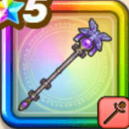

賢者リーザスのつえ
攻略班 9.0点 / テンションブースト神速メラゾーマダブルキャスト士気高揚七賢者の血族
くわしい特徴
【レベル別習得スキル】 Lv1【賢者】こうげき魔力+5 Lv1じゅもんダメージ+8% Lv10テンションブースト（消費MP：最大MPの10%）呪文で味方ひとりのテンションを確率で1段階上げる。このスキルはテンションの上昇が成功しやすい(戦闘中1回のみ使用可能) Lv15神速メラゾーマ（消費MP：50）敵1体にメラ属性の呪文大ダメージを3回与える Lv20ダブルキャスト（消費MP：76）敵全体にイオ・バギ・ギラ属性のうち、敵に有効な属性の呪文を2つ同時に唱え、特大ダメージを2回与える Lv30けもの系へのダメージ+5% Lv35マシン系へのダメージ+5% Lv40さいだいMP+12 Lv45こうげき魔力+12 Lv50士気高揚（消費MP：19）戦闘開始時に自身のテンションを確率で1段階上げ、まれに両隣の味方のテンションと自身のテンションを確率で1段階上げる(6ターン) Lv50七賢者の血族（消費MP：最大MPの2%）戦闘開始時に最大MPの2%を消費し、消費量に応じて呪文ダメージを上げ、さらに攻撃呪文使用時に必ずやまびこが発動する効果を自身に付与 【限界突破スキル】 1凸じゅもんダメージ+7% 2凸じゅもんダメージ+7% 3凸じゅもんダメージ+7% 4凸じゅもんダメージ+7%